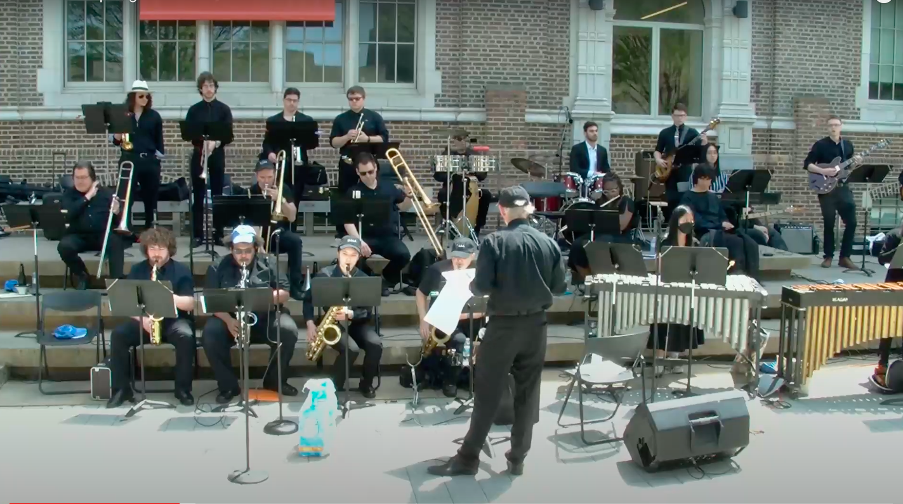

String Quartet
Tuesdays
7:00 - 9:00pm
CKB 116
7:00 - 9:00pm
CKB 116
Lead by Mr. Dave Remelis, the jazz band plays through funk, bepop, modern, blues, and more.
The band consists of trumpets, saxaphones, violinists, hand drum percussionists, vibraphonists, bassists, guitarists, pianists, singers and flutists.
However, musicians of all types are welcome.
At the end of each semester, they perform a concert.
Practice are held every Tuesday from 7:00 - 9:00pm at the Central King Building 116.
For those who are interested, feel free to join their practices at anytime.
